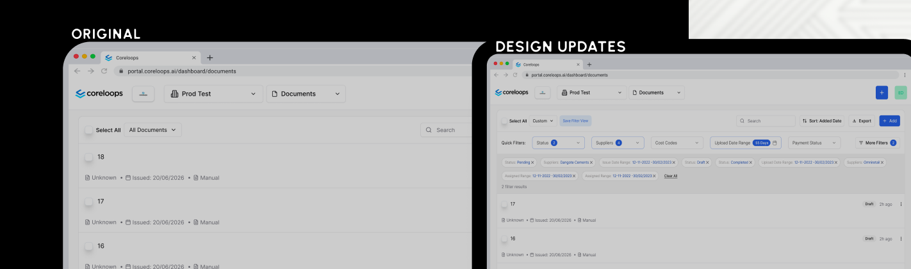
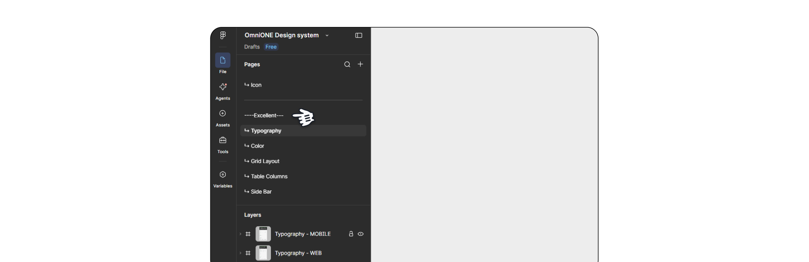
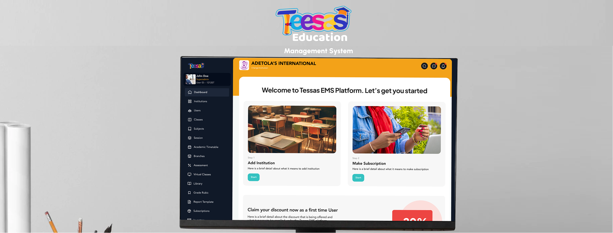
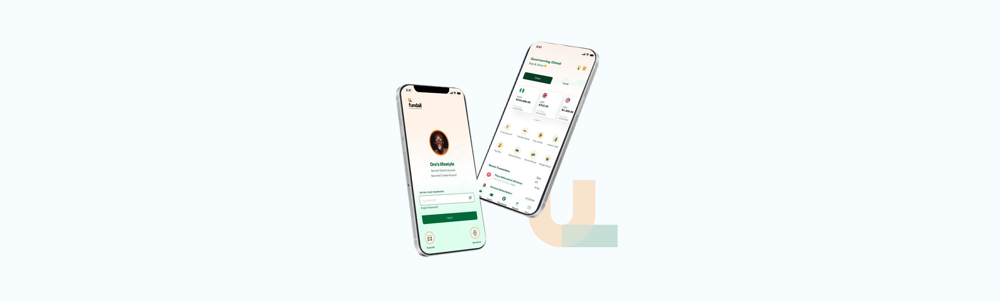
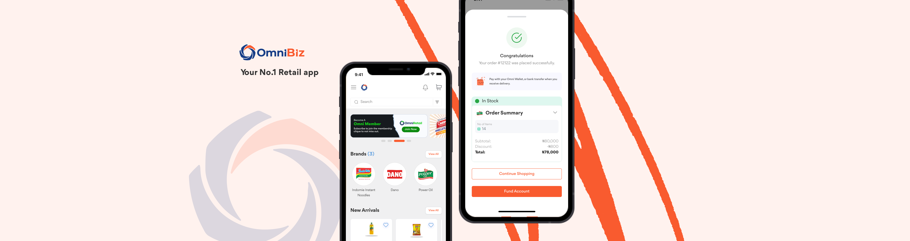
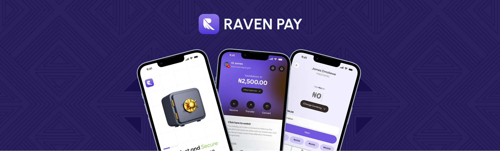
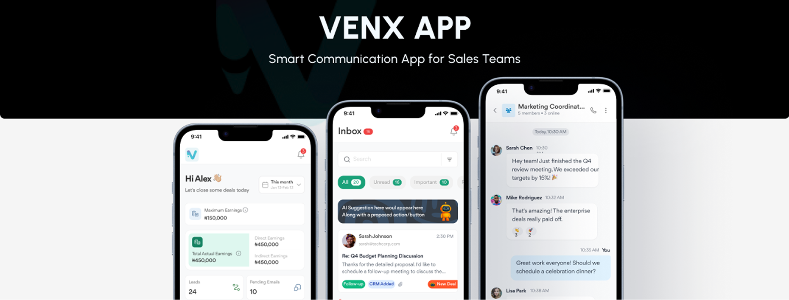

Selected Case Studies · 08
Hover a panel to open →-

Filters From A Drawer To Zero Clicks View Case Study → -
 Sending Money To People, Not Accounts
View Case Study →
Sending Money To People, Not Accounts
View Case Study →
-

One Design Language For Four Product Teams View Case Study → -

Three Rebuilds To Get One LMS Right View Case Study → -

Salary Advance: 6 Minutes To Under 2 View Case Study → -

Making "Not Here Yet" Feel Like A Preorder View Case Study → -

Making A Banking App Read As Serious, Not Cute View Case Study → -

A Full AI Sales CRM Concept In 24 Hours View Case Study →